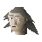

Slave

| Config name | cave_slave5 |
| NPC id | 983 |
| Combat level | hidden |
| Options | Talk-to |
| Wander range | 5 tiles from spawn |
| Defined in | scripts/quests/quest_upass/configs/upass.npc |
Slave
A wretched slave of Iban.
Show all 2 spawns on the world map → Open in knowledge graph →
Locations
| Area | Coordinates | Level | Count | Map |
|---|---|---|---|---|
| Underground Pass (underground) | 2384, 9659 | 0 | 1 | view |
| Underground Pass (underground) | 2385, 9657 | 0 | 1 | view |
Dialogue
PlayerHello...
SlaveKill the villagers, burn them all... every last one! I want nothing to survive... nothing but the sweet smell of burning flesh...
PlayerYou're ill!
SlaveWhat's that? You've never smelt it before? Well, let's just say that it's an acquired taste...
Quests
Referenced in scripts
scripts/quests/quest_upass/scripts/upass_slave.rs2